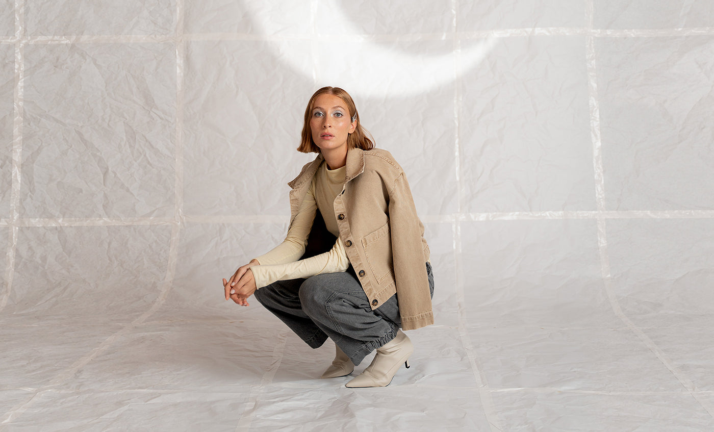
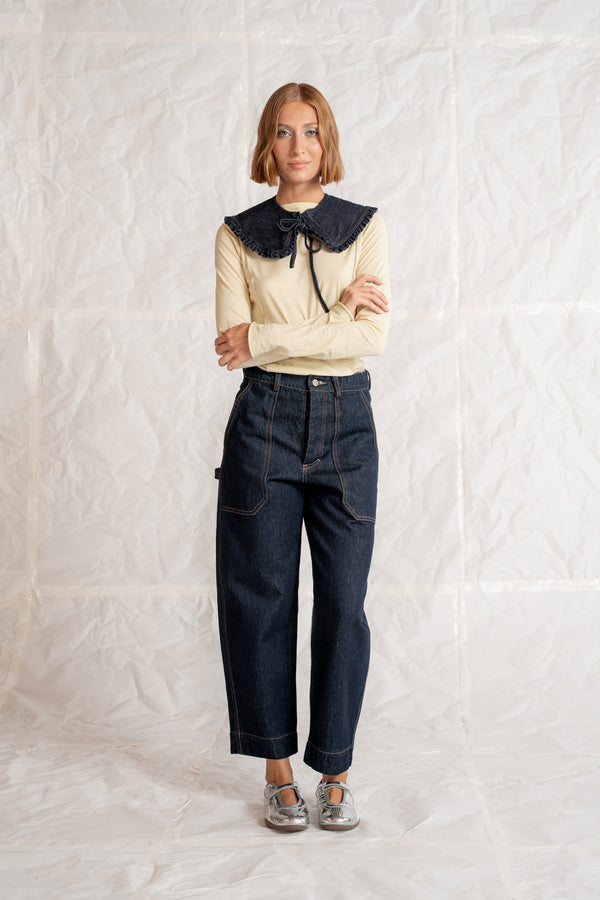
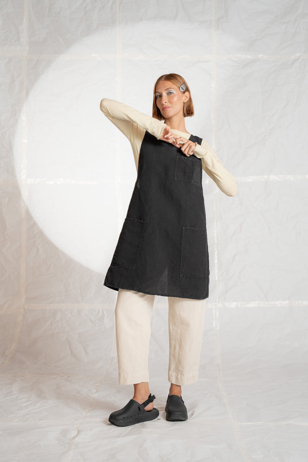
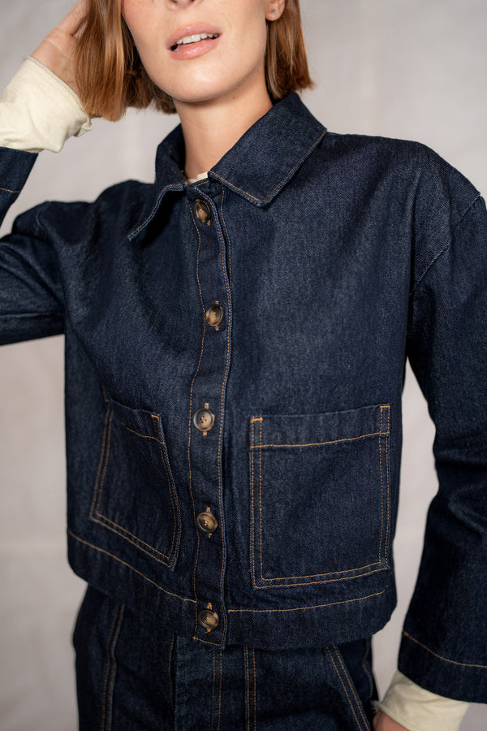
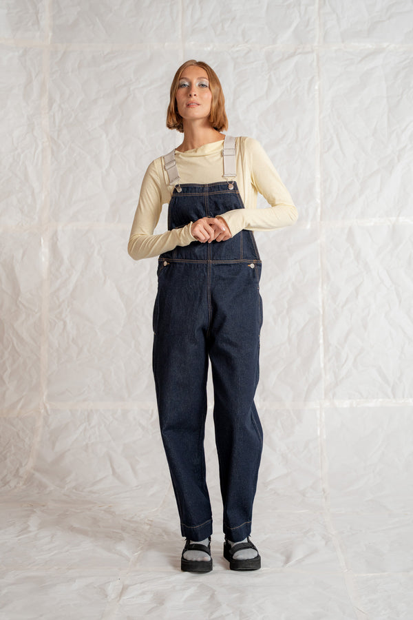
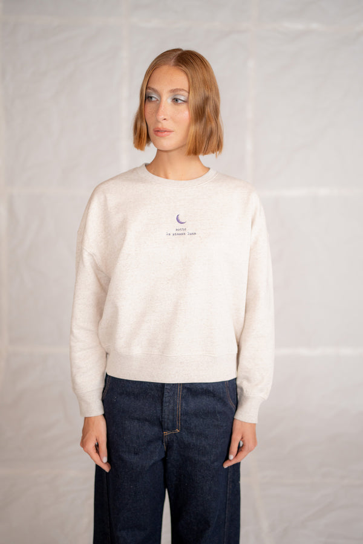
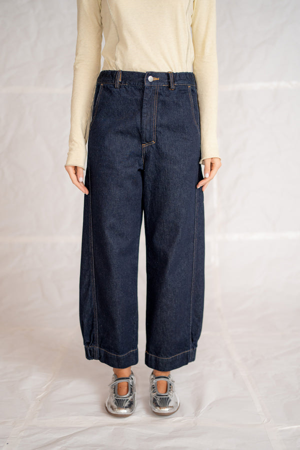
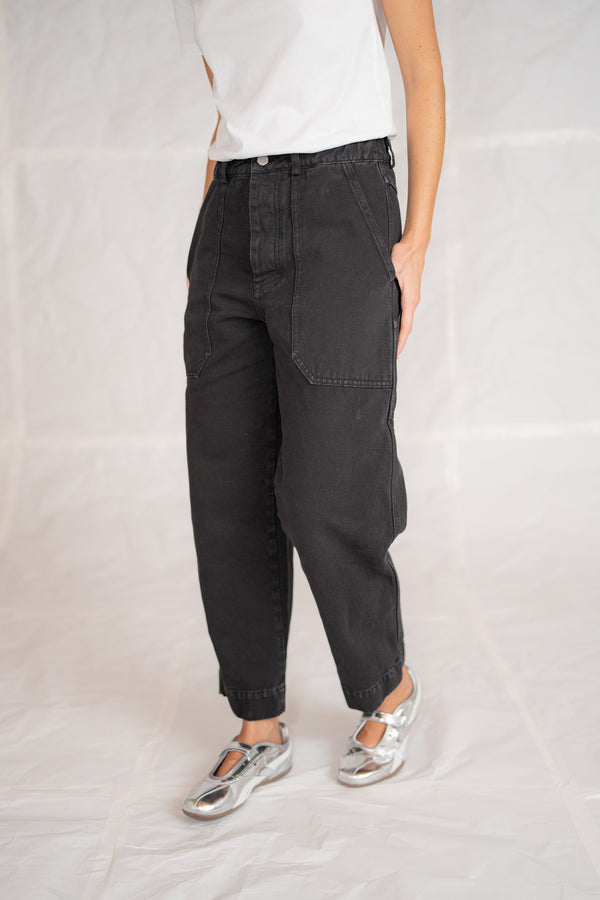
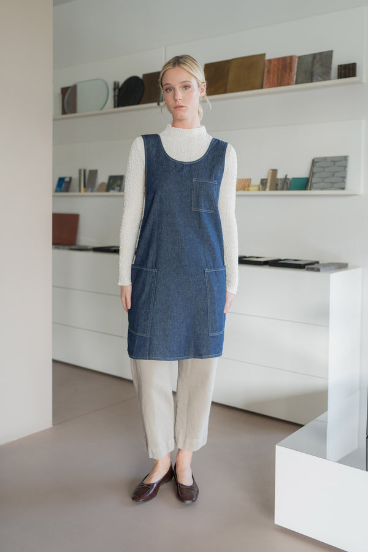
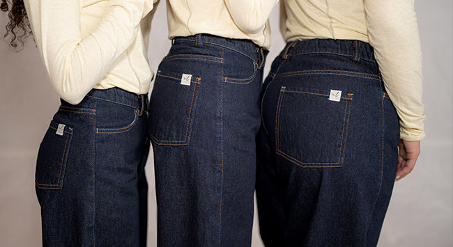

Autunno 2026 · Sotto la stessa luna
Abiti da lavoro
per chi crea con le mani.
Denim di cotone biologico e canapa, vestibilità comoda, tasche dove servono. Dal grembiule al jeans Apollo.
- Gratis sopra 99 €in Italia · altrimenti 5 €
- 3–5 giorni lavorativiper spedire i capi disponibili
- Cambio gratuitoin Italia entro 14 giorni
- Carte e PayPalVisa, Mastercard, Amex e altri
Disponibili ora
I capi più scelti



−8% Salopette Apollo jeans cotone riciclato – Blu indaco
119,00 €109,00 €



4,90
su 5, da 429 recensioni sul Jeans Apollo.
Le recensioni sono quelle raccolte sul negozio Laurels Apron (app Rivyo). Il grembiule/vestito in canapa nero Old ha 4,65 su 26 recensioni.
Leggi le recensioni sul sitoCollezioni
Scegli da dove partire

Dal 2020 · Mogliano Veneto
Laura disegna e cuce, Paolo fa il resto.
Laurels Apron nasce nel febbraio 2020: grembiuli e abiti da lavoro minimali, pensati per artigiani contemporanei, in tessuti naturali che migliorano con l'uso. Gli scarti di stoffa diventano scrunchies, bordature e campioni.
La nostra storia10% sul primo ordine
Iscrivendoti alla newsletter sul negozio ricevi uno sconto del 10%. Qui niente popup: lo trovi quando vuoi.